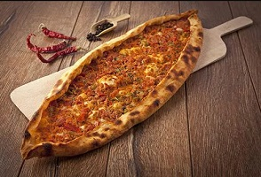

Eating Journal
Good things to eat and where to find them
09/06/2017: Dosa
Dosas are a favorite in India. They are made from a chickpea and rice batter that is fried on a griddle. In India these are very cheap . . unfortunately, they will cost you in Toronto.
If you like Indian food, check out Karaikudi in Scarborough.

08/24/2017: Pide
If you haven't tried Pide , also known as Turkish Pizza, your life is not complete.
My current favorite Pide Restaurant, is Mr. Pide in Greektown, Toronto. Order the Lahmacun !

08/22/2017: Falafel
One reason to wake up every morning -- Falafels!
If you like falafels, check out Ali Baba's. They have two for the price of one falafel sandwiches on Tuesdays!
07/10/2017: Spicy Pot
Ma la xiang guo is a dish from the Sichuan/Chongqing region of China. You can select a number of different items that are cooked together. This dish uses a special numbing spice (ma) together with spicy chilli (la) cooked until fragrant (xiang) in a big pot (guo).
Unfortunately, I haven't found a good restaturant in Toronto that serves this. You can make it at home using with this recipe.